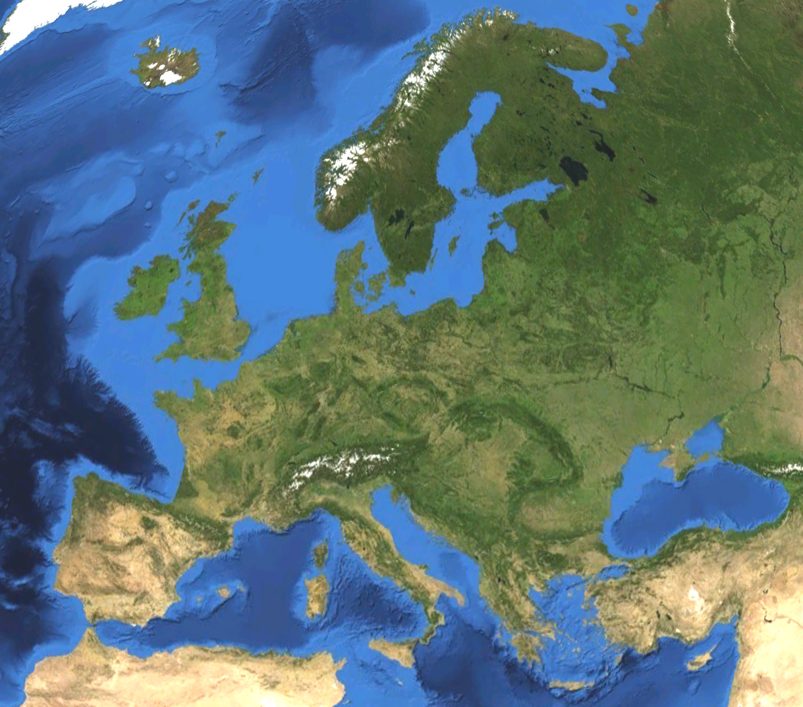

Morze Śródziemne – morze międzykontynentalne leżące pomiędzy Europą, Afryką i Azją
o powierzchni około 2,5 mln km². Zasolenie wód Morza Śródziemnego wynosi 33–39‰.
Na zachodzie jest połączone Cieśniną Gibraltarską z Oceanem Atlantyckim, na wschodzie przez cieśninę Dardanele łączy się z morzem Marmara i dalej przez cieśninę Bosfor z Morzem Czarnym, zaś przez Kanał Sueski z Morzem Czerwonym i dalej z Oceanem Indyjskim.
Nad Morzem Śródziemnym leżą następujące państwa i terytoria zależne (zgodnie z ruchem wskazówek zegara): Gibraltar, Hiszpania, Francja, Monako, Włochy, Malta,
Turcja to państwo położone w Azji (na półwyspie Azja Mniejsza) i częściowo w Europie Stolicą kraju jest Ankara. Inne ważne miasta : Istanbuł, Antayla, Izmir. Kraj jest podzielony na 81 prowincji
Egipt to panstwo polozone w polnocno wschodniej afryce staroegispka nazwa kraju oznacza narny lad i odnosi sie do zyznych obszarow wokol nilu. stolica kraju jest Kair. Inne wazne miasta : Aleksandria, Luksor, Asuan Hiza. W egipcie przewaza klimat suchy zwrotnikowy. Ludnosc to w glownej mierze
Moroko to panstwo polozne w polnocno zachodniej afryce glowne miasta to : casablanca , rabat, dez, marrakesz, agadir, tanger, na wybrzezach morskich przewaza klimat podzwrotnikowy, w glebi kraju skrajnie suchy, Kuchnia marokanska jest jedna z najatrakcyjnieszych w swiecie arabskim. Bogactwo ziol i porzypraw nadaje potrawa niepowtarzalny smak. Wspaniale szczyty skute lodem, rozlegle plaze i gorace piaski sahary sa miejscami szczegolnie wartymi zobaczenia
